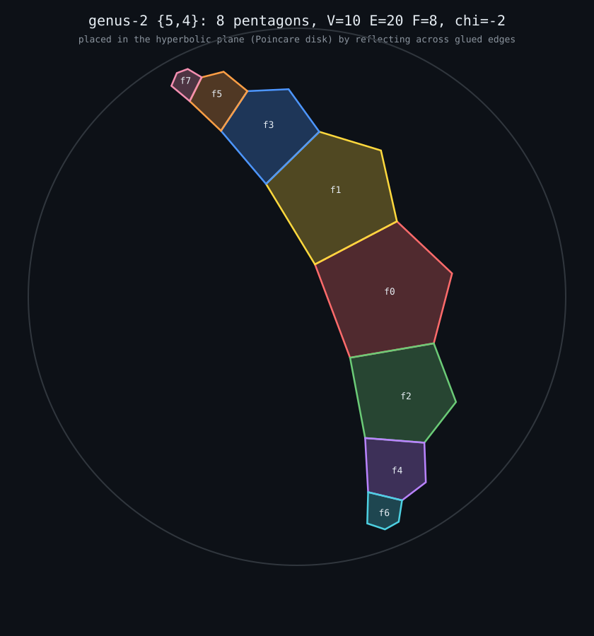

a closed surface of genus 2 tiled by 8 pentagons: V=10, E=20, F=8, chi=-2. each pentagon is a face, each edge is glued to another face with a twist. it's a finite closed world — no boundary, no outside.
the picture below places those 8 pentagons in the actual hyperbolic plane (the {5,4} tiling, Poincaré disk), one at a time, each by reflecting its neighbour across the shared edge. the geometry is forced: once you fix where one pentagon sits, the reflections pin down every other one.

and it comes out as a chain. that's not a layout choice — the dual graph of this map (faces as nodes, shared edges as links) is a path: f7–f5–f3–f1–f0–f2–f4–f6. unrolling it into the plane can only ever give a line of pentagons marching off to the boundary. the closed world is what you get when you roll that line back up and glue the ends with a twist.
render: genus2hyp.py — hyperbolic reflection across geodesics, chromatic recentring, drawn with chromium headless. the svg is the vector version.